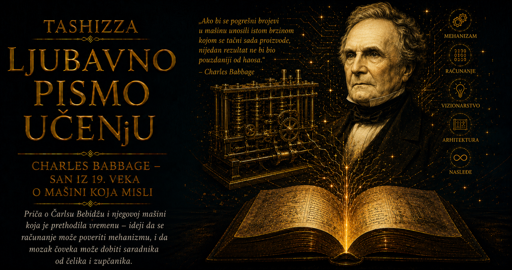

Ljubavno pismo učenju

Kada se govori o Charlesu Babbageu, lako je dopustiti da čoveka zakloni mašina. Njegovo ime danas priziva zupčanike, decimalne točkove, bušene kartice i nacrte uređaja u kojima prepoznajemo rane obrise programabilnog računara. Iza njih je, međutim, živeo čovek izuzetne mašte i gotovo bolne potrebe za preciznošću, istovremeno društven i svadljiv, duhovit i nepopustljiv, sposoban da očara londonski salon i da godinama vodi iscrpljujući spor zbog jedne tehničke odluke. Uređenost mu je pružala osećaj sigurnosti, dok je ljudsku nedoslednost često doživljavao kao prepreku koju bi razum, uz dovoljno napora, morao da savlada.
Rođen je 26. decembra 1791. godine, u trenutku kada je Britanija prolazila kroz duboku industrijsku i društvenu preobrazbu. Parne mašine menjale su proizvodnju, fabrike su rasle, gradovi se punili ljudima, dimom i bukom, dok se moć države sve snažnije oslanjala na trgovinu, navigaciju, astronomiju, poreze i sve veće količine brojčanih podataka. Matematičke i navigacione tablice računali su, prepisivali i štampali ljudi, pa je jedna omaška mogla da pređe u novo izdanje i proizvede posledice daleko od mesta na kojem je nastala. Babbage je odrastao na granici sveta ljudskih računovođa i još nepostojeće epohe u kojoj će ponovljive računske postupke preuzimati mašine.
Njegov otac Benjamin Babbage bio je imućan bankar i poslovni čovek, dovoljno uspešan da sinu obezbedi kvalitetno obrazovanje, društveni položaj i kasniju finansijsku nezavisnost. Majka Betsy Plumleigh Teape poticala je iz trgovačke porodice. Charles je zahvaljujući porodičnoj sigurnosti mogao da razvija zamisli čiji praktični ishod dugo nije bio vidljiv, ali je istovremeno odrastao uz očekivanje da će živeti razumno, disciplinovano i u skladu sa očevom voljom. Njegova intelektualna neposlušnost rano se sudarila sa tim zahtevom: birao je probleme koji su mu izgledali važni čak i kada su obećavali porodične nesuglasice, društveno nerazumevanje ili finansijsku neizvesnost.
Kao dete bio je krhkog zdravlja, pa ga je porodica zbog ozbiljne groznice jedno vreme sklonila iz uobičajenog školskog života, uz molbu učitelju da ga ne opterećuje suviše. Takav savet teško je mogao odgovarati njegovoj prirodi. Pokazivao je snažnu potrebu da pojave rastavlja na sastavne delove, otkriva pravila njihovog delovanja i proverava granice onoga što mu je saopšteno. Matematika mu je pružala osećaj da se iza prividnog nereda nalazi struktura dostupna istrajnom umu, pa je čitao daleko izvan zahteva svojih nastavnika i rano stekao neprijatno saznanje da obrazovna ustanova ponekad može zaostajati za radoznalošću učenika.
Kada je 1810. godine stigao na Trinity College u Cambridgeu, očekivao je susret sa najnaprednijom matematikom svoga vremena. Zatekao je univerzitetsku tradiciju koja se i dalje snažno oslanjala na Newtonovu notaciju diferencijalnog računa, dok su evropski matematičari razvijali moćan analitički jezik povezan sa Leibnizom, Eulerom, Lagrangeom i Laplaceom. Babbage je u toj razlici video znak intelektualne učmalosti, pa je zajedno sa Johnom Herschelom, Georgeom Peacockom i drugim mladim matematičarima osnovao Analitičko društvo, posvećeno približavanju britanske matematike savremenim evropskim dostignućima.
Njihova mala pobuna pokazala je jednu od trajnih osobina Babbageovog mišljenja: način zapisivanja određuje šta se lako može izraziti, proveriti i dalje razvijati. Analitičko društvo duhovito je predstavljalo svoj cilj kao pobedu „d-izma” nad „dot-izmom”, aludirajući na Leibnizovo označavanje diferencijala i Newtonove tačke. Iza studentske dosetke nalazila se ozbiljna borba za delotvorniji jezik matematike. Babbage je već tada razumevao da simboli utiču na tok misli, jer dobra notacija složen odnos čini vidljivim, dok zastarela može otežati razumevanje i usporiti razvoj čitave discipline.
John Herschel postao je jedan od najvažnijih prijatelja njegove mladosti. Kao matematičar, astronom, eksperimentator i čovek široke kulture, umeo je da prati Babbageovu radoznalost bez straha od njene neobičnosti, dok je George Peacock sa njima delio želju za obnovom britanske matematike. Njihovo prijateljstvo raslo je kroz prevođenje, raspravljanje, međusobnu proveru ideja i planiranje naučnih reformi. Babbageov kasniji život obeležili su brojni sukobi, ali su njegove formativne godine pokazale koliko su mu bila važna intelektualna savezništva sa ljudima sposobnim da prepoznaju veličinu problema pre pojave njegovog rešenja.
Univerzitetsku karijeru nije gradio uobičajenim putem. Diplomirao je bez završnog ispita za počasti, smatrajući da ispit ne može valjano proveriti znanje koje je već prevazišlo njegov program. U toj odluci spojili su se opravdana kritika, snažno samopouzdanje i osobina koja će mu kasnije stvarati ozbiljne teškoće: veoma teško je pristajao da učestvuje u postupku čiju vrednost ne priznaje. Godine 1828. postao je Lucasian profesor matematike na katedri koju je nekada držao Newton, ali tokom jedanaest godina provedenih na tom mestu nije održavao predavanja. Titula mu je pružala ugled i slobodu, dok su njegovu pažnju sve snažnije zaokupljali mašine, proizvodnja, statistika i reforma naučnih ustanova.
Njegov privatni život u početku je obećavao mirniju priču. Godine 1814. oženio se Georgianom Whitmore uprkos protivljenju svoga oca, a sačuvana građa upućuje na blizak i srećan brak. Imali su osmoro dece, od kojih je samo troje doživelo odraslo doba. Učestalost smrti dece u devetnaestom veku ne može izraziti težinu svakog pojedinačnog gubitka, naročito za čoveka čija je čitava intelektualna priroda težila uklanjanju greške i ovladavanju neizvesnošću. U sopstvenom domu susreo se sa silama koje nikakva preciznost, planiranje niti mehanička pouzdanost nisu mogli obuzdati.
Godina 1827. donela mu je gotovo nesaglediv niz gubitaka: umrli su mu otac, supruga Georgiana i jedan od sinova. Ostali su ožalošćen čovek, deca o kojoj je trebalo brinuti i projekti koji su već zahtevali izuzetnu usredsređenost. Otputovao je na evropski kontinent, delom radi zdravlja, a delom da bi se udaljio od kuće ispunjene uspomenama. O ličnom bolu kasnije je pisao uzdržano, ali se iz njegovog daljeg života može naslutiti kako ga je često preobražavao u rad, prikupljanje podataka, projektovanje i uređivanje sveta koji mu u presudnim trenucima nije pružio nikakav red.
Zamisao o računskoj mašini nastala je nekoliko godina ranije, dok je sa Herschelom pregledao matematičke tablice pune netačnosti. Prema priči koju je kasnije sam pripovedao, poželeo je da se takvi proračuni obavljaju pomoću pare. U toj naizgled usputnoj dosetki nalazila se industrijska revolucija preneta iz oblasti fizičkog rada u oblast računanja. Ukoliko je parna mašina mogla da preuzme ponavljanje mišićnih pokreta, mehanizam bi mogao da preuzme i ponavljanje precizno opisanih aritmetičkih koraka.
Britanska vlada podržala je razvoj Diferencne mašine 1823. godine, čime je započela jedna od najdužih i najmučnijih epizoda ranog državnog finansiranja složene tehnologije. Babbage je angažovao Josepha Clementa, jednog od najboljih mehaničara i alatničara svoga vremena, čija je radionica morala da unapredi sopstvene alate kako bi mogla da proizvede zahtevane delove. Spoj matematičke vizije i zanatske genijalnosti obećavao je izuzetan rezultat, ali su ga postepeno razorili sporovi oko troškova, radionice, vlasništva nad alatima i nejasno podeljene odgovornosti.
Savremeni modeli vođenja velikih istraživačkih projekata tada nisu postojali. Vlada je novac odobravala u etapama, bez stabilnog ugovornog okvira i pouzdane procene ukupnih troškova, dok je Babbage istovremeno bio pronalazač, projektant, nadzornik i javni zagovornik mašine. Clement je opravdano štitio sopstveno znanje, radionicu i poslovni interes, a svaka promena nacrta zahtevala je nove delove i povećavala cenu. Dok je država očekivala dovršenje ugovorene konstrukcije, Babbage je već prepoznavao njena ograničenja i u mislima projektovao bolju.
Njegova stvaralačka snaga i njegova velika slabost izvirale su iz iste nemirne inteligencije. Nacrt je doživljavao kao privremeni presek ideje koja nastavlja da se razvija, pa mu je prethodno rešenje postajalo teško prihvatljivo čim bi otkrio elegantniji princip. Takva osobina može biti dragocena u istraživanju, dok u izgradnji složenog uređaja ugrožava rokove, troškove i poverenje pokrovitelja. Deo neuspeha pripadao je ograničenjima njegovog veka, a deo samom Babbageu, koji je od metala, novca i ljudi očekivao da prate zamisao promenljivu gotovo istom brzinom kojom ju je njegov um razvijao.
Dok je Diferencna mašina tonula u sporove, načinio je najveći misaoni skok u svom radu i počeo da razvija Analitičku mašinu. Sada je zamišljao uređaj čije bi se operacije menjale prema instrukcijama unetim pomoću bušenih kartica, po uzoru na Jacquardov razboj. Predvideo je odvojeno „skladište” za brojeve i „mlin” za njihovu obradu, kao i ponavljanje postupaka, uslovno odlučivanje i automatski ispis rezultata. Njegova pažnja više nije bila vezana samo za pojedinačan proračun; pokušavao je da pronađe opšti način na koji se formalno opisani postupak može poveriti mašini.
Ista potreba za otkrivanjem skrivene strukture vodila ga je daleko izvan matematike. U knjizi On the Economy of Machinery and Manufactures, objavljenoj 1832. godine, proučavao je fabrike, alate, troškove, podelu rada i organizaciju proizvodnje. Obilazio je radionice sa strašću putnika koji istražuje novu civilizaciju, razgovarao sa radnicima i vlasnicima, beležio broj proizvodnih koraka, cenu materijala, brzinu mašina, količinu otpada i načine kontrole kvaliteta. U igli, lokomotivi, poštanskoj službi, osiguravajućem društvu i astronomskoj tablici pronalazio je isto pitanje: kako urediti znanje i rad da bi rezultat postao pouzdaniji?
Njegova radoznalost nije priznavala granice akademskih disciplina. Razvio je napravu za beleženje stanja železničke pruge, predlagao poboljšanja na lokomotivama i razmatrao uređaj za uklanjanje prepreka sa šina. Bavio se reformom poštanskih troškova, svetionicima, statistikom, osiguranjem i proverom autentičnosti dokumenata. U fabrikama je video tokove rada, u administraciji kretanje podataka, a u nizu svakodnevnih postupaka priliku da se ponavljanje preciznije opiše i bolje organizuje. Svet mu se ukazivao kao složen sistem čiji se skriveni mehanizmi mogu razumeti strpljivim posmatranjem.
Babbage je jednako pažljivo posmatrao i naučne institucije. Godine 1830. objavio je Reflections on the Decline of Science in England, oštru kritiku društva u kojem su položaj, poznanstva i aristokratski ugled često imali veću težinu od stvarnog istraživačkog rada. Zalagao se za profesionalnije ustanove, jasnije kriterijume i ozbiljniju državnu podršku nauci. Imao je hrabrosti da javno izgovori ono o čemu su mnogi govorili privatno, ali je njegova britka ironija često otežavala prihvatanje opravdane kritike. Nerazumevanje sopstvenog rada doživljavao je kao ličnu nepravdu i kao propuštenu priliku za čitavo društvo.
Pokušao je i da uđe u parlament, kandidujući se dva puta bez uspeha. Podržavao je reformske ideje i modernizaciju ustanova, ali je politički život zahtevao strpljenje, udruživanje i prilagođavanje ljudima koje mu je teško padalo. Matematički sistem mogao je da razloži na pravila i ispravi uočenu nepravilnost, dok su političke i društvene ustanove nastavile da deluju kroz interese, kompromise i protivrečnosti. Babbage je umeo prodorno da analizira sistem, ali nije uvek posedovao diplomatsku veštinu potrebnu da pridobije njegove učesnike.
Slika o usamljenom i namrgođenom pronalazaču ipak ne odgovara čitavoj njegovoj ličnosti. Njegova londonska kuća bila je poznato mesto večernjih okupljanja na kojima su se susretali naučnici, pisci, političari, umetnici, putnici i pripadnici visokog društva. Među gostima i poznanicima nalazili su se Charles Dickens, Charles Darwin, Michael Faraday, Mary Somerville i John Herschel. Babbage je umeo da bude očaravajući domaćin, da izvodi eksperimente, pripoveda neobične priče i pokazuje deo Diferencne mašine čiji su pokretni zupčanici budućnost činili opipljivijom od bilo kakvog apstraktnog objašnjenja.
Na jednom takvom okupljanju u junu 1833. godine sedamnaestogodišnja Ada Byron, buduća grofica od Lovelacea, videla je deo Diferencne mašine. Većina gostiju posmatrala ga je kao zadivljujući automat, dok je Ada želela da razume princip njegovog rada. Babbage je prepoznao njenu matematičku darovitost i sposobnost da tehničku konstrukciju sagleda imaginativno, pa ju je kasnije nazivao „Čarobnicom brojeva”. Njihovo prijateljstvo razvijalo se kroz razgovore i prepisku u kojoj su se susretali njegova inženjerska preciznost i njena želja da pronikne u šire mogućnosti programabilne mašine.
Posle Babbageovog predavanja o Analitičkoj mašini u Torinu 1840. godine, Luigi Federico Menabrea objavio je na francuskom jeziku prikaz njenog rada. Ada je tekst prevela na engleski i dopunila ga beleškama višestruko obimnijim od izvornika. Babbage je proveravao tehničke pojedinosti, predlagao teme i sa njom razmenjivao proračune, dok je ona razradila i objavila objašnjenje koje je čitaocima otvorilo širi pogled na mogućnosti uređaja. Sačuvana prepiska prikazuje živu saradnju obeleženu podsticajem, neslaganjima, objašnjavanjem i zajedničkim rešavanjem problema.
Njihov odnos imao je i napete trenutke. Babbage je želeo da preko Adinog teksta javno odgovori britanskoj vladi zbog obustavljanja podrške projektu, dok je ona odbila da svoj naučni rad pretvori u sredstvo njegovog političkog obračuna. Poštovala ga je duboko, ali je želela kontrolu nad sopstvenim tekstom i položaj ozbiljne saradnice. U tom sukobu vide se dve snažne volje: Babbage, koji je teško odvajao svoju mašinu od dugogodišnje ogorčenosti prema državi, i Ada, koja je umela da postavi granicu čoveku čiju je viziju razumela bolje od većine savremenika.
Babbage je tokom života negovao prijateljstva i sa drugim važnim ženama naučnog sveta. Matematičarka i astronomkinja Mary Somerville pripadala je njegovom bliskom intelektualnom krugu i upravo je preko nje Ada ušla u društvo u kojem ga je upoznala. Somervilleova je složene naučne ideje umela da približi širokoj publici bez gubitka ozbiljnosti, posedujući diplomatsku lakoću koja je Babbageu često nedostajala. Njihovo prijateljstvo svedoči o njegovom iskrenom poštovanju prema snažnim umovima u vremenu koje je ženama postavljalo brojne obrazovne i društvene prepreke.
U autobiografiji Passages from the Life of a Philosopher, objavljenoj 1864. godine, Babbage je beležio susrete sa znamenitim ljudima, putovanja, prevare, pozorišne trikove, igre, eksperimente i sopstvene izume. Knjiga otkriva um koji je gotovo svaku neobičnu pojavu pretvarao u predmet istraživanja. Proučavao je oštećenja velikih staklenih ploča, prstenove stabala, dubinu mora, vulkane i geološke promene, a jednom je ušao i u zagrejanu peć kako bi ispitao koliko visoku temperaturu ljudsko telo može da podnese. Saznanje iz druge ruke teško ga je zadovoljavalo kada je postojala mogućnost da pojavu sam izmeri ili proveri.
Fascinirali su ga i automati, naročito mehanička figura plesačice koju je kupio, popravio i pokazivao gostima. Privlačila ga je granica između privida živog pokreta i skrivenog niza poluga, osovina i prenosa koji ga proizvode. Posmatrač je video eleganciju plesa, dok je Babbage u istom prizoru prepoznavao kinematiku i precizno uređen sled operacija. Ta sposobnost da spoljašnju radnju prevede u unutrašnji mehanizam povezivala je njegova interesovanja za računanje, fabrike, društvene ustanove i mašine.
Bavio se i kriptoanalizom, otkrivajući pravilnosti u polialfabetskim šiframa i razvijajući postupke čiji će deo kasnije postati poznat pod imenom drugog istraživača. Svoja najvažnija saznanja iz te oblasti nije blagovremeno objavio, verovatno zbog povezanosti rada sa državnim interesima. Šifrovani tekst, fabrički proces i matematička tablica za njega su pripadali istoj porodici problema: iza prividnog nereda trebalo je pronaći ponavljanje, zakonitost i skriveni obrazac.
Najpoznatija neobičnost njegovih poznih godina bila je ogorčena borba protiv ulične buke. Orguljaši, svirači i pevači prekidali su mu rad, pa je vodio evidenciju o smetnjama, žalio se vlastima i podržavao strože propise. Kada se pročulo koliko ga buka pogađa, pojedini izvođači i dečaci okupljali su se pred njegovom kućom upravo da bi ga razdražili. Savremenici su u toj kampanji često videli komičnu čangrizavost, dok ju je Babbage doživljavao kao odbranu koncentracije i prava na duhovni rad. Zvučni prekid za njega je predstavljao krađu misli čiji se izgubljeni tok ne može jednostavno vratiti.
Njegovu potrebu za preciznom uzročnošću dobro pokazuje pitanje koje su mu, prema autobiografskom zapisu, postavljali pojedini posetioci: može li mašina ipak dati tačan odgovor ukoliko joj se unesu pogrešni brojevi? Babbage je sa mešavinom zaprepašćenja i ironije pisao da teško razume zbrku u idejama iz koje takvo pitanje nastaje. Mašina dosledno obrađuje podatke koje dobije, pa ne može čudom nadoknaditi grešku u ulazu ili pravilu. Dva veka kasnije, u svetu velikih informacionih sistema i veštačke inteligencije, njegova opaska zadržava izuzetnu savremenost.
Britanska vlada je 1842. godine konačno obustavila podršku Diferencnoj mašini. Administrativna odluka bila je razumljiva posle dugog razvoja, velikih troškova i izostanka završenog uređaja, ali je za Babbagea predstavljala potvrdu da država nije sposobna da prepozna vrednost budućeg načina rada. Nastavio je da sopstvenim sredstvima razvija Analitičku mašinu i ostavio hiljade stranica nacrta, tabela i beležaka. Povremeno je menjao pravac, vraćao se ranijim rešenjima i uvodio poboljšanja, stvarajući izuzetan tehnički arhiv umesto dovršenog uređaja.
Kasnije je projektovao elegantniju Diferencnu mašinu broj 2, ali zbog iscrpljenog odnosa sa državom nije tražio sredstva za njenu izgradnju. Više od jednog veka posle njegove smrti, londonski Science Museum izradio ju je prema sačuvanim nacrtima, koristeći stepen preciznosti dostupan viktorijanskim radionicama. Završena mašina radila je pouzdano, a kasnije joj je dodat i štampački mehanizam. Time je potvrđeno da su Babbageovi planovi bili ostvarivi, premda su zahtevali izuzetnu preciznost, mnogo novca i organizacionu istrajnost koju njegov prvobitni projekat nije uspeo da obezbedi.
Porodična priča njegovih mašina nastavila se zahvaljujući sinu Henryju Prevostu Babbageu, koji je sačuvao i proučavao očeve nacrte, gradio pojedine sklopove i objavljivao tehničku građu. Sastavio je deo „mlina” Analitičke mašine i tako doprineo da očeva zamisao ne ostane zatvorena u nepročitanim rukopisima. Charles Babbage nije ostavio dovršeno životno delo u obliku koji je želeo, ali je potomcima, muzejima i arhivima predao dovoljno podataka da buduće generacije mogu nastaviti razgovor sa njegovom konstrukcijom.
Pred kraj života posmatrao je veliki uspon viktorijanske tehnologije. Železnice, telegrafi, industrijska postrojenja i međunarodne izložbe pokazivali su da svet napreduje prema sve većoj mehanizaciji, ali mesto koje je očekivao u toj promeni nije mu bilo priznato. Njegova ogorčenost imala je stvarne razloge, mada ju je sopstveni temperament dodatno pojačavao. Godinama je čuvao dokumente starih sporova i vraćao se odlukama koje su ga povredile, kao da je i lično pamćenje pokušavao da pretvori u nepogrešivu evidenciju.
Umro je 18. oktobra 1871. godine u Londonu, u sedamdeset devetoj godini, bez javne pažnje kakvu će njegovo ime steći u računarskom dobu. Sahranjen je na groblju Kensal Green, dok su njegovi modeli, nacrti i beleške postepeno ulazili u muzejske i arhivske zbirke. Tek kada su programabilni računari postali stvarnost, istoričari, inženjeri i programeri vratili su se njegovim papirima i u njima pronašli odnose koji su im delovali zapanjujuće poznato: odvojenu memoriju i obradu, promenljive instrukcije, ponavljanje, odlučivanje i automatski izlaz.
Njegov život ne može se svesti na bajku o neshvaćenom geniju okruženom kratkovidim savremenicima. Bio je vizionar i izuzetno zahtevan saradnik, žrtva nedovoljno promišljene državne politike i čovek koji je sopstvenim stalnim izmenama otežavao završetak projekta. Umeo je da okupi darovite ljude, ali i da ih iscrpi sukobima; zahtevao je profesionalne standarde u nauci, dok je povređenost povremeno unosio u javne rasprave. Voleo je društvo i blistave večeri, a u poznim godinama vodio iscrpljujući rat sa zvucima londonskih ulica.
Upravo ga te protivurečnosti čine ljudski uverljivim. Decenijama je nosio u sebi mašinu koju je malo ko mogao celovito da zamisli, objašnjavajući njene delove ljudima bez iskustva sa programabilnim uređajima, pregovarajući sa činovnicima koji su zahtevali završen proizvod i tražeći od majstora preciznost na granici tadašnjih mogućnosti. Istovremeno je podnosio porodične gubitke, javna razočaranja i sopstvenu nesposobnost da zamisao u nekom trenutku proglasi dovoljno dobrom i konačnom.
Charles Babbage živeo je između dve epohe. Njegovo telo pripadalo je svetu pare, mesinga, ručno izrađenih zupčanika i pisama prenošenih kočijama, dok se njegov um već kretao među memorijom, operacijama, instrukcijama i podacima. Jaz između tih svetova pokušavao je da premosti crtežima, formulama, delovima mašina i tvrdoglavom verom u mogućnost da se ljudski postupak dovoljno precizno opiše kako bi ga izvršavao mehanizam.
Iza slavne mašine ostaje čovek vredan pamćenja: udovac koji je bol preobražavao u rad, otac koji je sahranio većinu svoje dece, prijatelj Herschela i Mary Somerville, saradnik Ade Lovelace, domaćin blistavih londonskih večeri, protivnik naučne učmalosti, neumorni posmatrač fabrika i razdražljivi neprijatelj uličnih orgulja. Njegov dar nosio je i težak teret, jer je jasno video ono za šta njegovo vreme još nije imalo ni sredstva ni reči. Kada je svet konačno krenuo putem programabilnih mašina, u budućnosti je pronašao tragove koje je Babbage ostavio gotovo dva veka ranije.